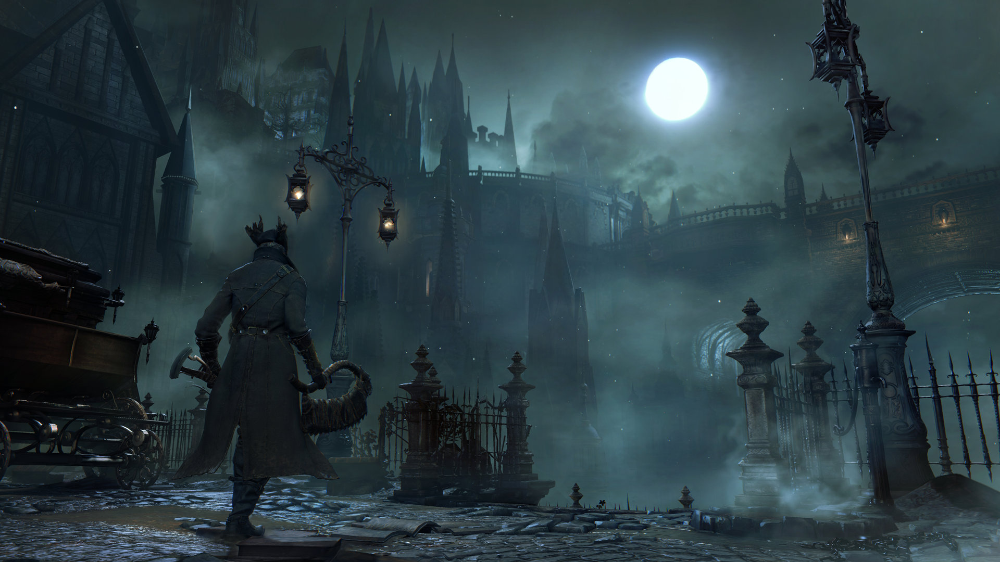
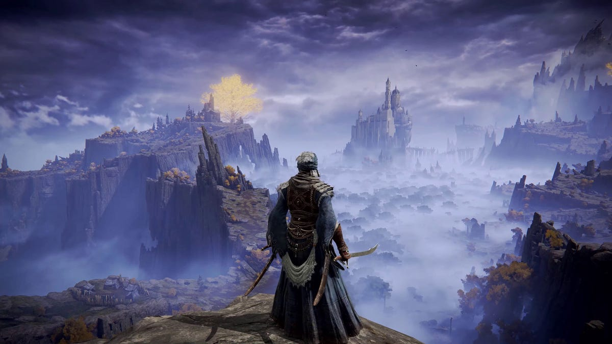

FROMSOFTWARE GAMES (FULL LIST)
- Demon's Souls (2009)
- Dark Sould (2011)
- Dark Souls II (2014)
- Bloodborne (2015)
- Dark Souls III (2016)
- Dark Sould Remastered (2018)
- Sekiro: Shadows Die Twice (2019)
- Demon's Souls Remastered (2020)
- Elden Ring (2022)
ABOUT THE GAMES WE WILL DISCUSS
Bloodborne (2015)
About Bloodborne
Hunt your nightmares as you search for answers in the ancient city of Yharnam, now cursed with a strange endemic illness spreading through the streets like wildfire. Danger, death and madness lurk around every corner of this dark and horrific world, and you must discover its darkest secrets in order to survive.Sekiro: Shadows Die Twice (2019)
About Sekiro
In Sekiro: Shadows Die Twice you are the “one-armed wolf”, a disgraced and disfigured warrior rescued from the brink of death. Bound to protect a young lord who is the descendant of an ancient bloodline, you become the target of many vicious enemies, including the dangerous Ashina clan. When the young lord is captured, nothing will stop you on a perilous quest to regain your honor, not even death itself.Elden Ring (2022)
About Sekiro
Rise, Tarnished, and be guided by grace to brandish the power of the Elden Ring and become an Elden Lord in the Lands Between. Unravel the mysteries of the Elden Ring's power. Encounter adversaries with profound backgrounds, characters with their own unique motivations for helping or hindering your progress, and fearsome creatures.VISUALS
Bloodborne
Sekiro: Shadows Die Twice

Elden Ring
SOUNDTRACK
Bloodborne
Sekiro: Shadows Die Twice
Elden Ring
GAMEPLAY
Bloodborne
Sekiro: Shadows Die Twice
Elden Ring
CLOSING DISCUSSION ON DIFFICULTY
FromSoft games are notoriously known for their difficulty. Which game do you think is most difficult? Open discussion!